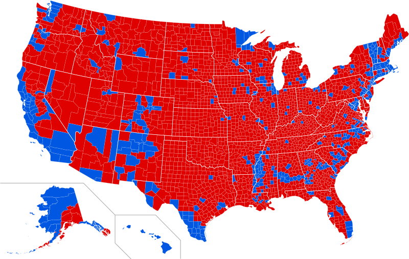

Pros
The current system protects the majority of states. The central states are a minority compared to larger states like New York or California. With the electoral college, the interests of the minority are protected. Take, for example, the 2016 elections. While Clinton did win the popular vote, she only won 487 counties. President Trump won 2,626 of the nation’s counties. If Clinton had been declared president, she would have the support of only 18.5% of America’s land.

Another pro is that it gives smaller presidential candidates a chance to win some of the electoral vote. The smaller states are cheaper, and easier to campaign in, so a smaller candidate, who might have difficulty funding his campaign, is given a chance to campaign in the smaller states.
Ultimately, the biggest takeaway from the electoral college is that it gives the smaller states a chance to stand up against the larger and more populated states.
Cons
Obviously, as it was stated before, it is possible for a candidate with the majority of the vote to lose the election. In 2000, Al Gore beat George H.W. Bush by 543,895 votes, yet lost by 5 electoral votes leading to him losing the presidential election. In 2016, Hillary Clinton beat Donald Trump by 2,868,686 votes, but Donald Trump beat Clinton by 77 electoral votes, which netted him the victory of the 2016 elections.
This is a problem for people who voted for the winner of the popular vote. Some feel ripped off, or dissatisfied. This can spiral into a larger problem, like a general distrust of the national government, or large protests, which occurred after the 2016 elections.
https://transition.fec.gov/
https://transition.fec.gov/
https://apnews.com/afs:
https://commons.wikimedia.org/